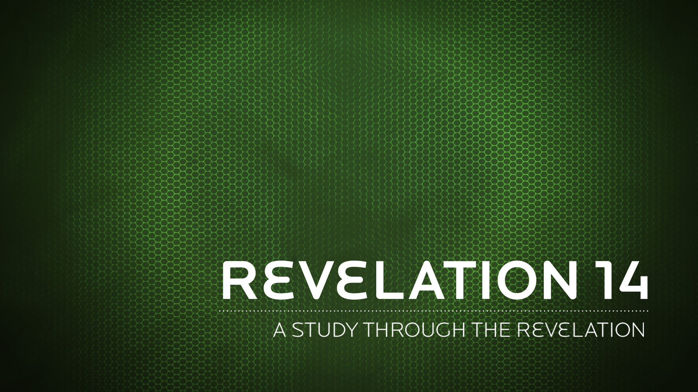

And they sang a new song: "You are worthy to take the scroll and to open its seals, because you were slain, and with your blood you purchased men for God from every tribe and language and people and nation.
Revelation 5:9 NIV
Whoever serves me must follow me; and where I am, my servant also will be.
John 12:26 NIV
This great crowd, surrounding the lamb, is not the sum total of all believers. It is the beginning, the great advance sign of an even greater harvest to come.
N.T. Wright
After this I looked and there before me was a great multitude that no one could count, from every nation, tribe, people and language, standing before the throne and in front of the Lamb.
Revelation 7:9 NIV
Look, here comes a man in a chariot with a team of horses. And he gives back the answer: ‘Babylon has fallen, has fallen! All the images of its gods lie shattered on the ground!’
Isaiah 21:9 NIV
Babylon was a gold cup in the LORD’s hand; she made the whole earth drunk. The nations drank her wine; therefore they have now gone mad.
Jeremiah 51:7 NIV
"In my vision at night I looked, and there before me was one like a son of man, coming with the clouds of heaven. He approached the Ancient of Days and was led into his presence.
Daniel 7:13 NIV